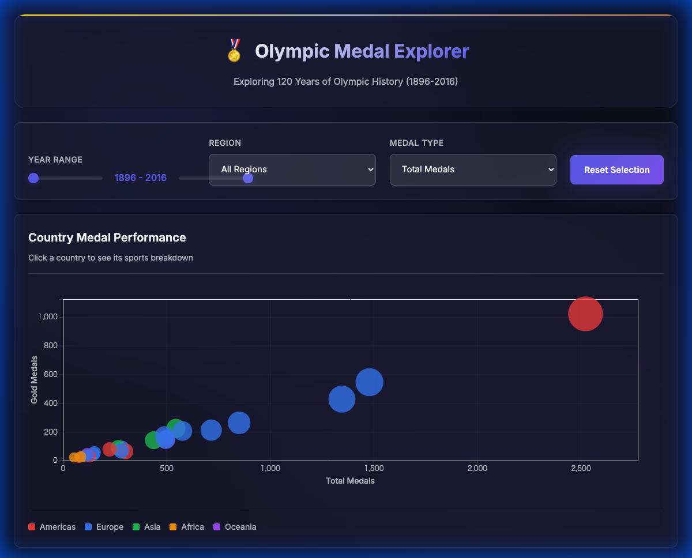

オリンピック競技大会は1896年のアテネ大会以来、120年以上にわたり世界最大のスポーツイベントとして開催されてきた。 この間、参加国数は14カ国から200カ国以上に増加し、競技種目も43から300以上に拡大している。 この膨大なデータには、国際関係、スポーツ科学の発展、地政学的変化など、多くの洞察が含まれている。
本研究の目的は、以下のリサーチクエスチョンに答えるインタラクティブ可視化システムを開発することである：
「オリンピックのメダル獲得数は、時代・国・競技においてどのようなパターンを示すか？」
本システムはTamara Munznerの「Visualization Analysis and Design」(2014)の設計原則に基づいて構築した。 特に以下の章の概念を適用している：
本システムでは、Kaggleで公開されている「120 years of Olympic history: athletes and results」データセットを使用した。 このデータセットはCC0（パブリックドメイン）ライセンスで提供されており、1896年アテネ大会から2016年リオ大会までの 27万件以上のアスリート記録を含んでいる。
| 属性 | 型 | 説明 |
|---|---|---|
| NOC | カテゴリカル | 国・地域コード（3文字） |
| Sport / Event | カテゴリカル | 競技種目・イベント名 |
| Medal | カテゴリカル | Gold / Silver / Bronze / NA |
| Year | 順序 | 開催年（1896-2016） |
| Region | カテゴリカル | 大陸（Americas, Europe, Asia, Africa, Oceania） |
システムはHTML5、CSS3、およびD3.js v7を用いたクライアントサイドWebアプリケーションとして実装した。 以下の2つのビューを連携させたLinked Views設計を採用している。
散布図では、各国をデータポイント（円）として表現し、以下の視覚エンコーディングを使用した：
積み上げ棒グラフでは、競技別のメダル獲得数を以下のエンコーディングで表現した：
Munzner Chapter 11-12の原則に基づき、以下のインタラクション機能を実装した：

図1: Olympic Medal Explorerシステムの全体画面
本システムを使用した分析により、以下の知見が得られた：
Munznerの設計原則に基づいた評価を以下に示す：
本研究では、120年間のオリンピックメダルデータを可視化するインタラクティブシステム「Olympic Medal Explorer」を開発した。 Tamara Munznerの可視化設計原則に基づき、散布図と棒グラフの2つのビューを連携させたLinked Views設計を採用することで、 国別・競技別のメダル分布パターンを効果的に探索できるシステムを実現した。
本システムにより、オリンピック史における各国の強み、競技別の傾向、地域的特性などの洞察を得ることができ、 スポーツデータの可視化における複数ビュー連携の有効性を示すことができた。
[1] Munzner, T. (2014). Visualization Analysis and Design. A K Peters/CRC Press. https://www.cs.ubc.ca/~tmm/vadbook/
[2] rgriffin. (2018). 120 years of Olympic history: athletes and results. Kaggle. https://www.kaggle.com/datasets/heesoo37/120-years-of-olympic-history-athletes-and-results (CC0: Public Domain)
[3] Bostock, M., Ogievetsky, V., & Heer, J. (2011). D3: Data-Driven Documents. IEEE Transactions on Visualization and Computer Graphics, 17(12), 2301-2309.